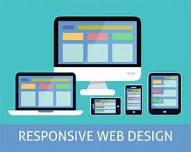
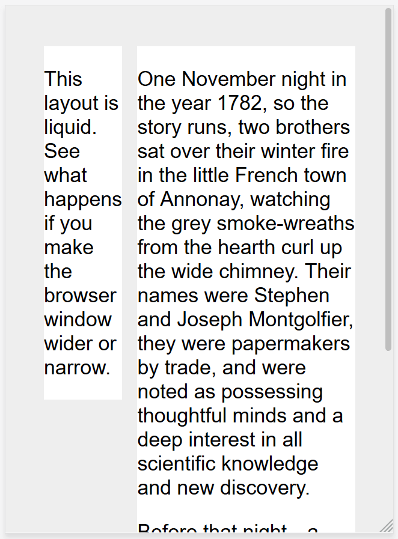

Responsive web design (RWD) refers to designing websites to adapt to a user's device. The goal is for a website to retain its optimal usability and appearance regardless of the device it's displayed on. Responsive web design responds to user needs by adapting to different screen sizes, orientations, layouts, and platforms. This is accomplished with the use of flexible grids and layouts, responsive images, and CSS media queries. 
HTML is fundamentally responsive, or fluid. If you create a web page containing only HTML, with no CSS, and resize the window, the browser will automatically reflow the text to fit the viewport.
While the default responsive behavior may sound like no solution is needed, long lines of text displayed full screen on a wide monitor can be difficult to read. If wide screen line length is reduced with CSS, such as by creating columns or adding significant padding, the site may look squashed for the user who narrows their browser window or opens the site on a mobile device.

Media queries allow us to run a series of tests (e.g. whether the user's screen is greater than a certain width, or a certain resolution) and apply CSS selectively to style the page appropriately for the user's needs.
For example, the following media query tests to see if the current web page is being displayed as screen media (therefore not a printed document) and the viewport is at least 80rem wide. The CSS for the .container selector will only be applied if these two things are true.